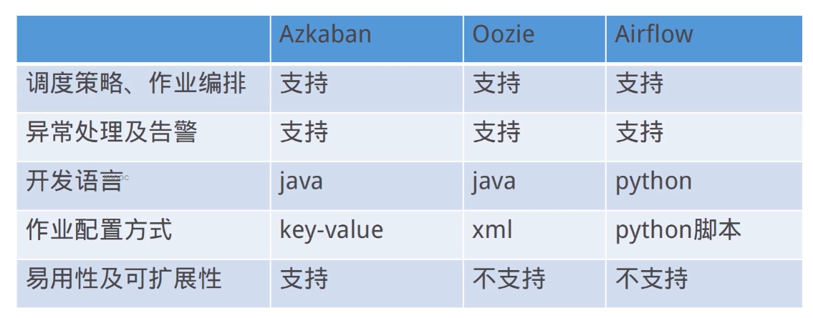
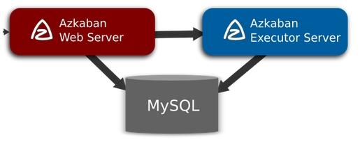
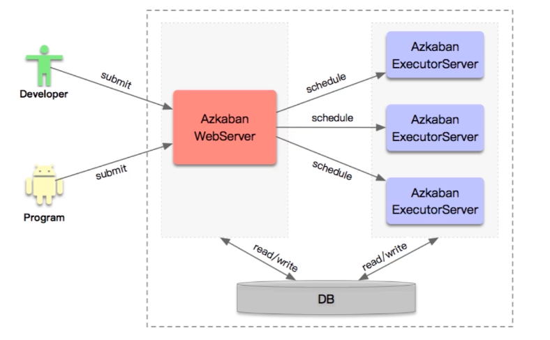
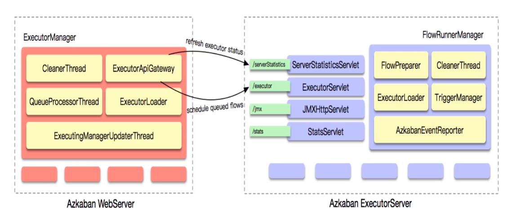
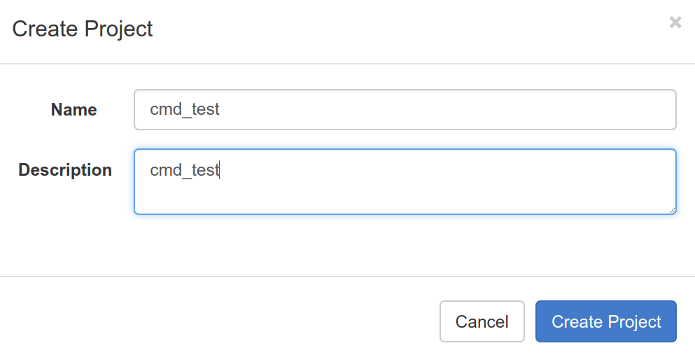
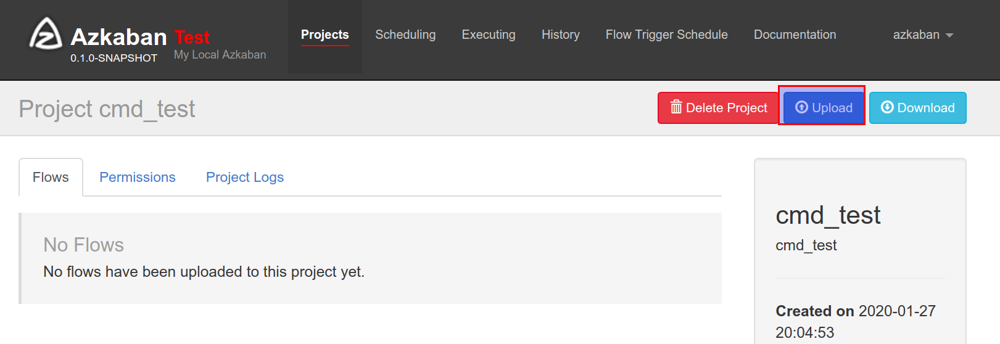
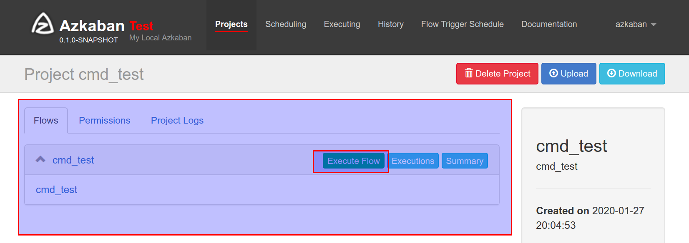
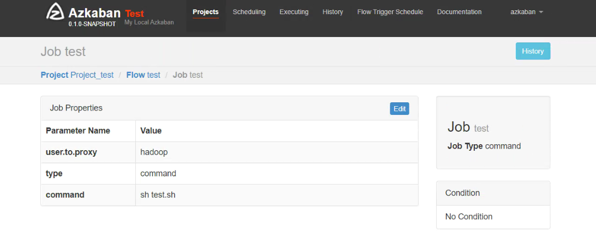
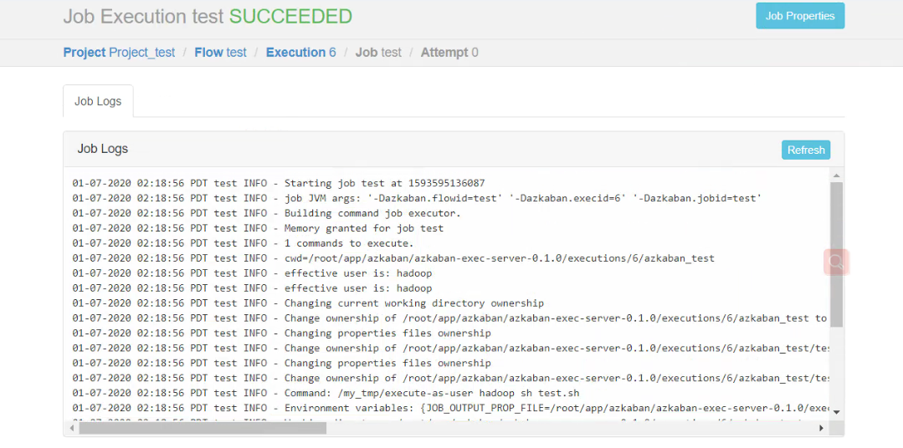

调度系统
任务处理现状
- 搭建Hadoop集群,实现了离线数仓的基础架构
- 编写HQL定时对数据进行计算,生成T+1的离线数据
- 不同的任务编写成不同的HQL文件,通过Crontab进行调度
- 安排几十个计算的先后顺序,避免顺序颠倒导致计算错误
- 一个任务失败,后续任务全部等待,效率很低
- 任务太多,串行执行时间太长
任务处理场景
- 原始数据为业务数据库or FTP存储的文件类数据
- 通过Shell脚本或者Hadoop工具,将数据存储到HDFS
- 通过MapReduce任务对HDFS上的原始数据进行转换,以分区表的形式存储到多张Hive表
- 对Hive中多个表的数据进行JOIN处理,得到一个明细数据Hive大表
- 将明细数据进行复杂的统计分析,得到结果报表信息
- 将统计分析得到的结果数据同步到业务系统中,供业务调用使用
任务处理需求
- 分解计算任务,支持shell脚本程序, java程序, mapreduce程序、hive脚本等
- 各任务单元之间存在时间先后及前后依赖关系,前置任务失败,后续依赖任务不执行
- 很好地对任务进行编排组织复杂执行计划,定时触发计算任务,任务失败进行报警
调度系统功能
- 用户可以方便的定义一个作业流程都包含哪些作业及依赖关系
- 管理工作流的生命周期,定时执行任务,支持Cron表达式
- 支持各种依赖条件的判断及后续任务执行的触发操作
- 对异常作业有完善的应对措施,比如重试、报警
- 支持资源和权限的控制,最好支持任务优先级
- 对调度系统本身及工作流有完善的监控,便于排查问题及协助数据治理
常用开源调度框架对比
- Linux Crontab:针对个人用户及小任务量
- Apache Oozie:功能强大,配置复杂的Hadoop任务调度框架
- Azkaban:开源的工作流管理器,轻量级调度框架
- AirFlow:基于Python开发的通用批处理调度框架
- Zenus:阿里开源的基于Hadoop的工作流调度系统
- EasyScheduler:国内开源的分布式工作流任务调度系统

Azkaban介绍
- Linkedin公司开源的分布式批量工作流任务调度器
- 通过简单的KV的方式,生成Job,并构建依赖关系
- 通过插件化的任务提交模块,支持可扩展的多任务提交
Azkaban优点
- 可通过job配置文件,快速建立任务和任务之间的依赖关系
- 提供模块化和可插拔的插件机制,原生支持shell、 java,hive等
- 基于Java开发,提供Ajax Api,易于二次开发
Azkaban适用场景
- 通过Azkaban结合Datax实现定时的数据采集服务
- 通过Azkaban调度执行Shell, Java, Hive,Hadoop等任务
- 开发可复用的程序,通过Azkaban编排成工作流,执行批处理任务
- 对Azkaban进行二次开发通过接口创建任务、调度任务、管理任务,
- 将Azkaban作为数据平台的一部分,提供任务调度的能力
- 基于Azkaban的异常处理、监控报警、审计日志完善数据平台功能
Azkaban架构与调度流程

- Azkaban Server: Azkaban的管理服务,提供WebUI,负责Project管理、权限管理、定时执行、跟踪进度、审计日志等等功能
- Azkaban Executor:负责工作流的提交和执行,搜集执行日志
- MysQL:存储工作流详情及节点和任务的状态信息等
Azkaban部署模式
- Solo mode:内置数据库, Server和Executor在同一个进程中
- Two mode:基于Mysql数据库,启动一个Server和一个Executor
- Multi mode:分布式模式,一个Server和多个Executor
Azkaban执行流程图

- 用户通过界面或者API提交任务到AzkabanServer
- AzkabanServer根据一定的选择策略(资源状态、执行任务数量等)选择合适的
- Executor,下发工作流Executor获取到任务信息,执行任务收集日志
Azkaban核心交互流程

- AzkabanServer主动调用Executor的API获取状态信息
- 根据计算规则选择执行的Executor Server (任务数量、内存和CPU等资源、最近分配的时间)
- 调度WorkFlow到Executor执行, Executor执行并监控任务
Azkazban安装部署
- Azkaban官网: https://azkaban.github.io
- 软件下载地址: https://github.com/azkaban/azkaban
- 官方插件地址: https://github.com/azkaban/azkaban-plugins
- 官方文档地址: http://azkaban.github.io/azkaban/docs/latest
前置环境
- Java环境
- Mysql数据库
Azkaban编译
- 获取Azkaban源码进行编译
大家可以访问Azkaban Github下载对应版本的源码包,获取完成之后进行编译：编译完成之后我们在各个模块下的target下可以得到一系列的安装包，包括azkaban-db-0.1.0-SNAPSHOT.tar.gz、azkaban-exec-server-0.1.0-SNAPSHOT.tar.gz和azkaban-web-server-0.1.0-SNAPSHOT.tar.gz等等，这三个是我们后面需要的。1
./gradlew installDist
配置azkaban数据库
1
2
3
4
5
6
7
8
9
10
11
12
13tar zxvf azkaban-db-0.1.0-SNAPSHOT.tar.gz
mv azkaban-db-0.1.0-SNAPSHOT /soft
#进入mysql交互模式，运行mysql的命令
mysql -uroot -proot
#创建azkaban数据库
create database azkaban;
#创建相关表
use azkaban;
source /soft/azkaban-db-0.1.0-SNAPSHOT/create-all-sql-0.1.0-SNAPSHOT.sql;
#执行show table命令查看相关表
show tables;部署Azkaban-Web-Server
- 部署azkaban web server
1
2tar zxvf azkaban-web-server-0.1.0-SNAPSHOT.tar.gz
mv azkaban-web-server-0.1.0-SNAPSHOT /soft/home/azkaban-web-server - 配置Azkaban-Web-Server
我们需要对conf目录下的azkaban.properties文件进行配置
azkaban.properties
1 | # azkaban集群名称 |
azkaban-users.xml
1 | <azkaban-users> |
azkaban 默认配置中有两个用户分别为azkaban和metrics，大家可以根据需要自行添加相关用户。
部署Azkaban Exec Server
- 部署azkaban exec server
1
2tar zxvf azkaban-exec-server-0.1.0-SNAPSHOT.tar.gz
mv azkaban-exec-server-0.1.0-SNAPSHOT /soft/home/azkaban-exec-server - 配置Azkaban-Exec-Server
我们需要对conf目录下的azkaban.properties文件进行配置
azkaban.properties
1 | # azkaban集群名称 |
- 启动executor服务
注意：azkaban的启动必须要在azkaban的home目录下，执行bin/xxxx1
2
3bin/start-exec.sh
# 查看相关进程
jps -m
注意：azkaban exec server启动之后，还需要一步操作，需要我们激活当前的exec server，我们需要查看exec server日志，获取当前execserver的端口，然后通过访问url进行激活
1 | # 查看exec server启动日志，获取当前监听端口 |
- 启动web服务
注意：azkaban的启动必须要在azkaban的home目录下，执行bin/xxxx1
2
3bin/start-web.sh
# 查看相关进程
jps -mAzkaban示例
首先我们创建一个简单的command类型的任务。创建完成之后，对我们的cmd_test目录进行压缩，压缩成zip格式。1
2
3
4
5
6
7
8
9
10
11
12mkdir cmd_test
vi cmd_test.job
# 新建x.job文件，并输入以下内容
#command
type=command
command=sh test.sh
vi test.sh
# 新建命令中需要的脚本文件
#!/bin/sh
echo "hello azkaban"新建project1
2zip -r cmd_test.zip cmd_test
登录我们的azkaban web界面http://xxxxxxx:8081。新建project，上传zip包，并执行任务。

上传任务包

执行任务
Azkaban用户代理
Azkaban工作流
- Project: Azkaban的抽象概念,项目。一个Project包括多个Flow
- Flow:流程,一个Flow包含多个Job及Job的依赖关系
- Job:具体的任务,有command, java, hive,hadoopjava等类型
Azkaban任务类型
- Azkaban拥有独立的plugins仓库,需对其进行编译【可在GitHub上搜索azkaban plugins】
- 不同的Job plugin是建立在command的基础之上
- Command类型是万能的Azkaban任务类型
Azkaban代理用户
- Azkaban可以代理其他linux用户执行命令
- 通过代理用户模式可以实现Hadoop的权限控制
- 在源码中编译 execute-as-user.c 文件
1
2
3
4
5
6
7
8
9
10
11
12[root@hadoop001 azkaban]# cd azkaban-3.81.0/
[root@hadoop001 azkaban-3.81.0]# cd az-exec-util/
[root@hadoop001 az-exec-util]# cd src/main/c
[root@hadoop001 c]# ll
总用量 4
-rw-rw-r--. 1 root root 3976 12月 6 2019 execute-as-user.c
[root@hadoop001 c]# gcc execute-as-user.c -o execute-as-user
[root@hadoop001 c]# ll
总用量 20
-rwxr-xr-x. 1 root root 13536 7月 1 16:11 execute-as-user
-rw-rw-r--. 1 root root 3976 12月 6 2019 execute-as-user.c
[root@hadoop001 c]# - 移动进入exec-server目录
1
2
3
4
5
6
7
8
9[root@hadoop001 azkaban-exec-server-0.1.0]# mkdir extlib
[root@hadoop001 azkaban-exec-server-0.1.0]# cd extlib
[root@hadoop001 extlib]# pwd
/root/app/azkaban/azkaban-exec-server-0.1.0/extlib
[root@hadoop001 extlib]# cp /root/app/azkaban/azkaban-3.81.0/az-exec-util/src/main/c/execute-as-user execute-as-user
[root@hadoop001 extlib]# ll
总用量 16
-rwxr-xr-x. 1 root root 13536 7月 1 16:17 execute-as-user
[root@hadoop001 extlib]# - 修改权限
1
2
3
4
5[root@hadoop001 extlib]# chmod 6050 execute-as-user
[root@hadoop001 extlib]# ll
总用量 16
---Sr-s---. 1 root root 13536 7月 1 16:17 execute-as-user
[root@hadoop001 extlib]# - 修改相关配置文件
1
2
3
4
5
6
7
8
9[root@hadoop001 extlib]# cd ../plugins/jobtypes/
[root@hadoop001 jobtypes]# ls
commonprivate.properties
[root@hadoop001 jobtypes]# vim commonprivate.properties
execute.as.user=true
azkaban.native.lib=/root/app/azkaban/azkaban-exec-server-0.1.0/extlib
azkaban.group.name=hadoop
【注意：这里不能设置root和azkaban,源码中不允许】 - 重启
1
2
3
4
5
6
7
8
9
10
11
12
13重启exec-server
[root@hadoop001 azkaban-exec-server-0.1.0]# ./bin/shutdown-exec.sh
Killing executor. [pid: 35728], attempt: 1
shutdown succeeded
[root@hadoop001 azkaban-exec-server-0.1.0]# ./bin/start-exec.sh
[root@hadoop001 azkaban-exec-server-0.1.0]# curl http://localhost:33643/executor?action=activate
重启web-server
[root@hadoop001 azkaban]# cd azkaban-web-server-0.1.0/
[root@hadoop001 azkaban-web-server-0.1.0]# ./bin/shutdown-web.sh
Killing web-server. [pid: 35799], attempt: 1
shutdown succeeded
[root@hadoop001 azkaban-web-server-0.1.0]# ./bin/start-web.sh - 任务测试
jobsh文件1
2
3type=command
command= sh test.sh
user.to.proxy=hadoop [切记加上这行，否者会执行失败]1
2
3#!/bin/sh
echo "---------------"
whoami
执行成功页面
